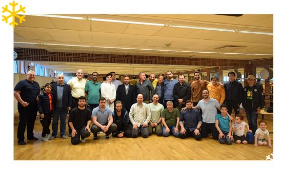

ABOUT US
About NIC
Norrbotten’s Islamic Center (NIC) was founded in Lulea, Sweden, in
2006 by three volunteers, Mohamed Gabra, Baby Thein, and Kaber
Marefat. It is a non-profit charity founded as an Islamic
organization with no political affiliation.
Under the center’s internal rules, the members work together to
represent their work to authorities, organizations, and
institutions both inside and outside of Sweden. This is done
through the center’s organizational and administrative structure.


Vision and Mission
Based on the statement of God Almighty “O people! We created you all from a male and a female, and made you into nations and tribes so that you may know one another”. (49:13)
By establishing a common language of conversation while abiding by the correct Islamic laws, the Islamic Center (NIC) plays a crucial and comprehensive role in bringing the perspectives of the various Islamic social spectrums together.
Goals of the Center
We, at Norrbottens Islamiska Center, offer different activities for men and women of all age groups.
- Offering accurate information about Islam
- Assisting Muslims in Norrbotten
- Focusing on youngsters of Muslim faith
- Supporting other Islamic organizations
Goals of the Center
We, at Norrbottens Islamiska Center, offer different activities for men and women of all age groups.
- Offering accurate information about Islam
- Assisting Muslims in Norrbotten
- Focusing on youngsters of Muslim faith
- Supporting other Islamic organizations
Facilities in Islamic Center